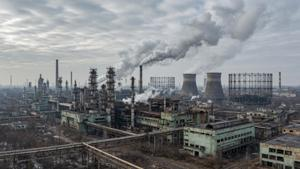
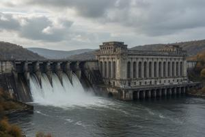
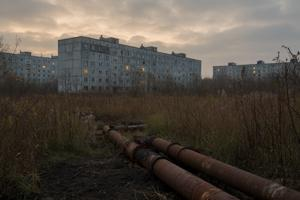

Gowbkaslava
{kind=link}

Gowbkaslava (Pannonian Glagolitic: ⰃⰑⰫⰁⰍⰀⰔⰎⰀⰂⰀ, lit. “Gowbka's Glory”) is an industrial city in Former Upper Pannonia, on the right bank of the South Drava, 40 km east of Vronovica. Now part of the Deglian Republic and the administrative center of the Gowbkaslava ujezd (county), it was transformed under Communist rule from a minor market town into the country's primary manufacturing center. The city was officially renamed Novoslava (New Glory) in 1990; the new name was never adopted in practice.
History overview
Origins
The site was occupied by Pucza, a small market town. It had a weekly market, a river customs post, and a connection to the Vronovica South railway; its population at mid-century did not exceed four thousand.
In 1949, the Communist Party of Upper Pannonia under Severyn Gowbka approved the Party Programme for 1950–2000. It mandated the construction of a major industrial complex to anchor the country's transition to a socialist economy. Pucza was the obvious choice: the narrowing of the South Drava there suited dam construction; coal, iron ore, and construction materials were available regionally; and the existing railway provided immediate logistics. The town was expropriated, its residents resettled, and the site renamed Stalinkostur — Stalin City — in 1950.
Hydroelectric plant
{kind=link}

Construction of the Stalin Hydroelectric Power Plant, designed with Soviet technical assistance, began in 1950 and was completed in 1954. The dam raised the South Drava by more than two metres above the pre-dam waterline, creating a reservoir; the plant's rated generating capacity was 420 MW. The impoundment inundated dozens of settlements, among them Bregovo, formerly the episcopal seat of Upper Pannonia. The reservoir was designated the Stalin Sea.
Industrial wastewater from the factories built in subsequent years was discharged into the reservoir through settling tanks that were rudimentary at best, making the former Stalin Sea one of the most polluted large water bodies in the world, colloquially the Stinky Sea (Smrudno Morje), and turning its shores into the marsh known today as Xljubiscza.
Industrial complex
The industrial complex was assembled through the 1950s following Soviet standard-project templates: a steel works, a metallurgical complex, a machinery plant, a chemical works, a fertilizer factory, a plastics plant, and a fuel-refining installation. The automobile plant — the Gowbkaslava Automobile Plant (Gowbkaslavska Samojezdova Djeljnja) — was completed in 1966, producing the Drava microcar from the following year.
Alongside the civilian installations, classified military factories were constructed, identified by numbers rather than names — Factory 25, Facility 41, and others. The numbering was assigned arbitrarily and revised frequently with the intention of confusing foreign spies. In practice it confused everybody, confounding internal logistics. Misrouted shipments and duplicate orders traceable to the factory numbering system were a recurring source of production delays throughout the PRUP period.
The workforce was drawn primarily from the countryside. Initial accommodation was hostel-like, with roughly ten workers per room. From the mid-1950s, Gowbczi skrynki (“Gowbka boxes”) — four-story prefabricated panel blocks — provided family apartments normed at one room per family of up to two children. From 1970, the eight-story Gowbczi szatniki (“Gowbka wardrobes”) replaced the earlier type, adding lifts and central heating, and raising the per-family norm to two rooms.
Following de-Stalinization, the city was renamed Gowbkaslava in 1956, and the hydroelectric plant became the Gowbka Plant. The Stalin Sea was renamed the Pannonian Sea (Pannonsko Morje); Gowbka declined to associate his name with a body of water already notorious for flooding and environmental pollution.
Supply crisis
By the 1980s, the supply network serving Gowbkaslava's two hundred thousand residents had failed across most categories. Queuing for staple foodstuffs was routine; consumer goods were unobtainable through official channels. Factory managers routinely understated output to maintain barter reserves, an illegal practice the planning authorities tolerated because the alternatives were worse.
Open protests began in 1988, initially over food shortages and unpaid wages, then broadening into demands for independent trade unions and political reform. Wildcat strikes in 1988 and 1989 halted production intermittently at the steel and chemical plants. The government's response was inconsistent: some strikers were prosecuted; others received wage increases the treasury could not finance.
Collapse and civil war
Gowbka's death in 1989 accelerated the disintegration already under way. The planned economy collapsed faster than any replacement could be assembled. By 1990, unemployment in Gowbkaslava exceeded forty percent; most factories had ceased production by 1991.
Privatization, administered by a transitional government of former party officials, transferred industrial assets to politically connected buyers at nominal prices. The new owners of obscure legitimacy showed no interest in production. The standard outcome was asset stripping: machinery, piping, electrical installations, and all removable elements of value were dismantled and sold as scrap or exported across the border.
An independent workers' movement, drawing on the networks formed during the strike years, briefly emerged as an organized force cutting across ethnic lines. Its cross-ethnic character alarmed both the privatizing interests and the ethnic political organizations consolidating in parallel. A widely theory holds that new owners deliberately planted provocateurs and amplified ethnic incidents to fragment the movement's coalition. By whatever means, the workers' movement split along Zguro-Deglian lines in 1990 and ceased to function as a unified body.
Violence escalated through 1991. Ethnic homogeneity of housing blocks, the collapse of employment, and the availability of weapons combined to produce neighborhood militias with pronounced ethnic character. By 1992, organized combat units operated openly. In 1993, Deglian military forces took the city after sustained fighting; the Zgurian population fled or was expelled, and their property was systematically looted.
Present state
{kind=link}

The city's current population is estimated at approximately 80,000, a decline of more than 60 percent since 1985, driven mainly by the departure of Zgurians but also by Deglian resettlement to Vronovica, emigration, and falling birth rates. The rural Gowbkaslava ujezd has depopulated even further and now consists of several half-abandoned villages with a combined population of about 7,000.
Most of the industrial installations stand idle, their structures stripped of equipment and unrepaired for decades. Some of the larger factory halls have been informally reoccupied as markets and storage. A handful of metallurgical and chemical plants continue to operate under ownership that is not publicly disclosed.
The South Drava Hydroelectric Power Plant — formerly the Gowbka Plant, renamed in 1990 — remains the country's primary electricity source, supplying more than sixty percent of Former Upper Pannonia's total consumption. It is one of the few facilities in the country jointly operated by Zgurians and Deglians, a cooperation that continued even through the war. The plant is guarded by FUPFOR. Its generating machinery has received no systematic maintenance since 1985. In recent years, cryptocurrency mining operations have established themselves in several vacated factory buildings, drawing on surplus output available at below-market rates.
Environmental conditions in the city itself have improved substantially since the sharp decline in production, though the Pannonian, or Stinky, Sea remains a heavily contaminated body of rotting ditch-water, and its shores are still notorious Xljubiscza.
Categories: Settlements